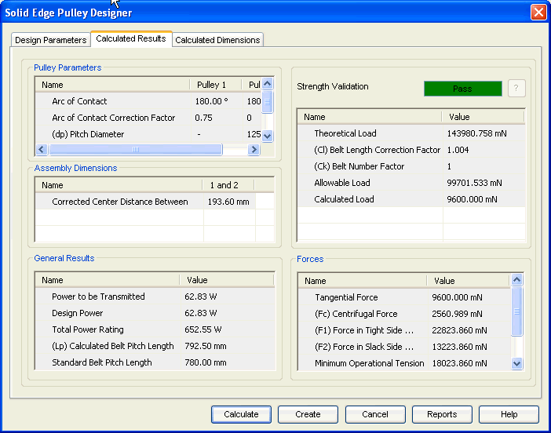

Pulley Calculated Results tab
The Calculated Results tab provides the options you use to view the results of calculation. :

Displays parameters for pulleys such as arc of contact and groove angle.
Displays the outputs related to the pulleys assembly such as transmission ratio, center distances between the pulleys.
Displays general results of the pulleys like design power, total power rating and calculated belt pitch length.
Displays the overall performance of the v-belt in terms of Pass/Fail. You can also review the allowable load and some factors related to belt.
Displays the results related to load carrying capacity of the v-belt.
Use the ? button to access the Strength Validation Failure window which displays the design failure reasons in case strength validation fails.